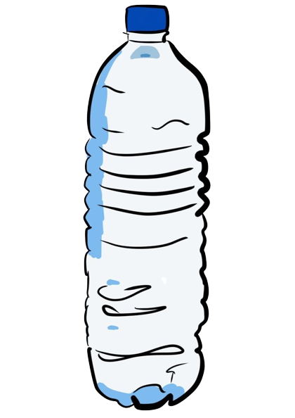

A cada ano 100.00 mamíferos marinhos e um milhão de aves aquáticas morrem por confundir resíduos plásticos com alimentos.
Mais de 150 toneladas de plástico existem nos ocenaos. Uma estimativa de 4,8 a 12,7 milhões de toneladas de plástico entra por ano nos oceanos.
Mais de 150 toneladas de plástico existem nos ocenaos. Uma estimativa de 4,8 a 12,7 milhões de toneladas de plástico entra por ano nos oceanos.
